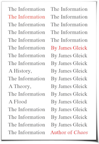

The First Post: On Information Theory
“Everything we care about lies somewhere in the middle, where pattern and randomness interlace.” ― James Gleick
[In a personal exhange over the question: which is more fundamental; information or particles?]
"No but an objects' properties are due to some... organisation, pattern, some arrangement. Structure." She said.
"But structure is information."
-
I've always had an inkling of something. Since I was a child, saturating the words I learned to speak, the formulas I manipulate as a student and the code I write now. I saw it in the trees and in the ecology I studied. Pattern. Generation. A string of words representing an action, a string of genes representing a human being, a string of code generating a digital world.
Information.
I did not have a concrete understanding of the field. If someone had asked me then, I would not have been able verbalise what I thought. Only an intuition. Only a subconscious emphasis on the pattern of things in relation to their behaviour. Eventually, the words came from another.
The Information by James Gleick was a book recommended to me by my first computer science professor in UBC, Gregor Kiczales, nearing the end of my course in Systematic Program Design (which I currently TA).
This book gave me the means to express what I thought about the universe. The super domain of all pattern/information. That all objects have behaviour. Things are deterministic and can be predicted. Even further, possible futrue states can be generated using the information used to generate the current state of any domain. With some certainty.
"The field is at the intersection of mathematics, statistics, computer science, physics, neurobiology, information engineering, and electrical engineering. The theory has also found applications in statistical inference, natural language processing, cryptography, neurobiology, human vision, the evolution and function of molecular codes, thermal physics, quantum computing, linguistics, pattern recognition, and anomaly detection." - The Wikipedia page for information theory.
Perhaps this book even resolved a complex in mind. The conflict between art and science. Beauty sometimes came from structure and order, or sometimes from randomness. I could say the dancer danced beautifully because my genes have structured my brain to respond to such stimulus with awe. But in that dance, she made her moves and made steps of her own creation.
Borrowing from biology, an attractive person should be the average of all faces, symmetric, with a bit more sexual dimorphism (ie more feminine females, more masculine males). It shows genetic fitness - order and perfect generation. But organisms repeatedly give sexual preference towards novel traits over perfectly-average ones. Genetic diversity, while the product of random mutation, is essential for survival.
Which brings me to where I stand in the world. We live in the intersection between uncertainty and determination, mutation and perfection. To quote the author:
“Everything we care about lies somewhere in the middle, where pattern and randomness interlace.”